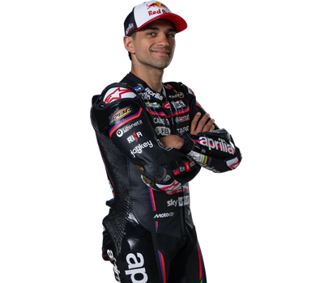

Jorge Martín
Jorge Martín Almoguera (San Sebastián de los Reyes, Madrid, 29 de enero de 1998) es un piloto de motociclismo español. Ha sido campeón de la Red Bull Rookies Cup 2014 y del Campeonato Mundial de Motociclismo de Moto3 en 2018 con Gresini Racing. Desde 2021 compite en la «categoría reina» de MotoGP, resultando campeón del mundo en 2024 y subcampeón en 2023 con el equipo Prima Pramac Racing. Desde 2025 es piloto oficial de Aprilia reemplazando a Aleix Espargaró.

Resumiendo, los datos más importantes de Jorge Martín son los siguientes:
- 29 de enero de 1998
- San Sebastián de los Reyes, Madrid, España
- 1,68 metros de altura
- 63 kg de peso
- Aprilia RS-GP25
- Dorsal número 1
A lo largo de su carrera, Jorge Martín ha pertenecido a varios equipos.
- Gresini Racing (Moto3)
- Prima Pramac Racing (MotoGP)
- Aprilia (MotoGP)
En la temporada de 2024, Jorge Martín sorprendió al mundo coronandose campeón del mundo
| Puntos obtenidos | 508 |
|---|---|
| Posición en la clasificación final de la competición | 1º (Campeón del mundo) |
| Poles | 11 |
| Victorias | 10 |
| Podios | 32 |
Enlaces de interés si quieres seguir investigando sobre Jorge Martín.
Página de la wikipedia de Jorge Martín Página oficial de MotoGP